光学玩具 视觉错觉 & 大脑扭曲
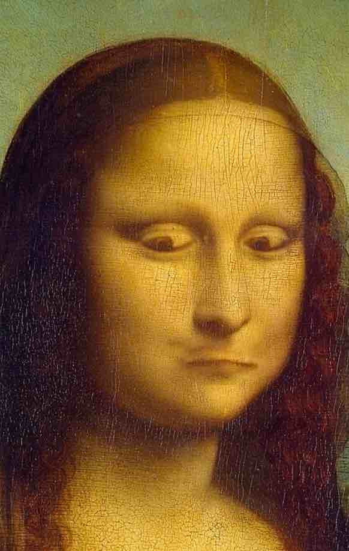
撒切尔效应
一个神秘的脑筋急转弯，面孔是错误的，但颠倒过来却显得如此正确。
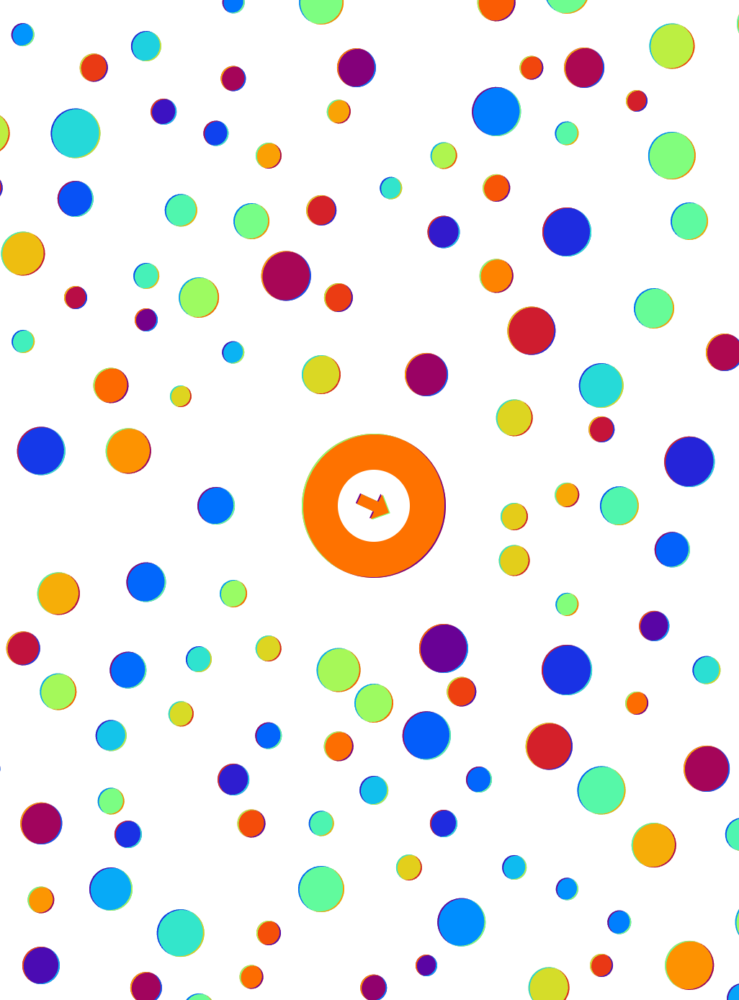
滑动彩虹
这些彩虹是在屏幕上移动还是静止不动？
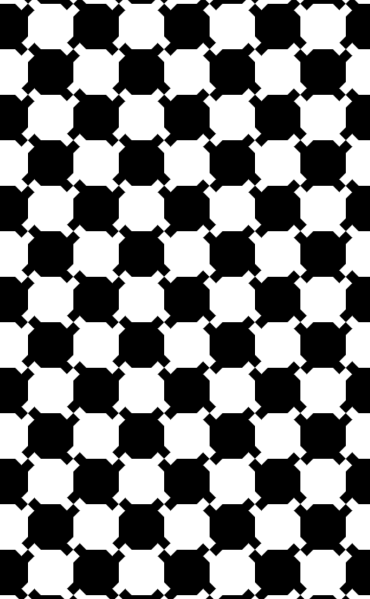
棋盘角
这个动画板会让你头疼，都是直线，但你会看到角度。
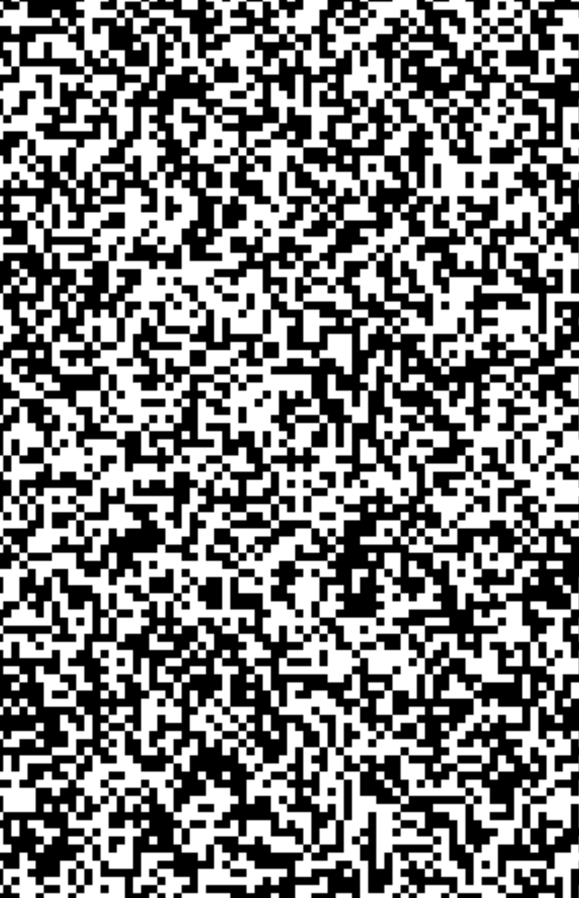
POV 静态立方体
观察立方体停止移动时的出现和消失
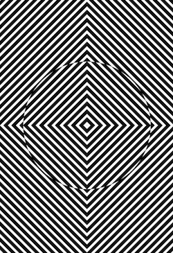
瀑布效应
观看这个人工瀑布，然后观看世界在你周围扭曲。
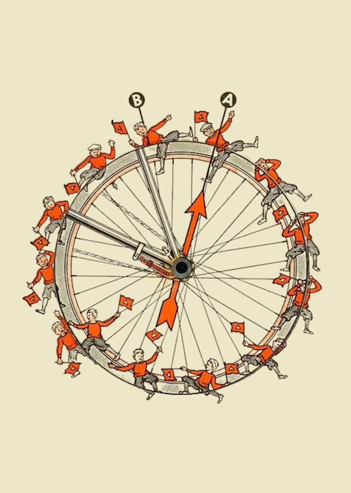
失踪的自行车手
山姆·劳埃德（Sam Loyd）设计的一个消失谜题，绝对是个让人费尽心思的难题。它可谓经典之作！
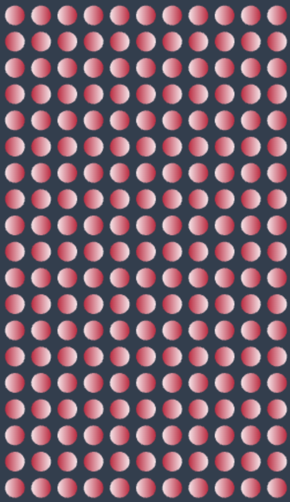
狡猾的桃子
试图让这些球始终停留在你的视线正中央，简直是不可能的！
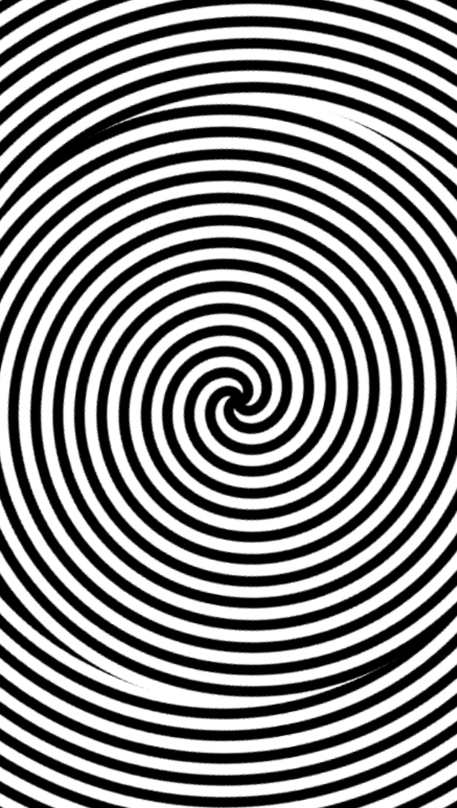
运动余晖效应
盯着它看一会儿，你就能把效果从屏幕上带走。
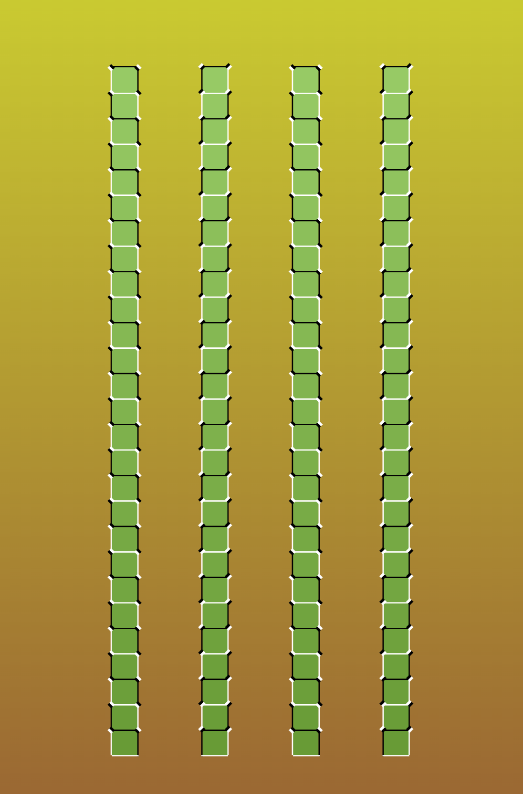
被愚弄了
老实说，我真的想象这就是熊猫体验世界的方式。
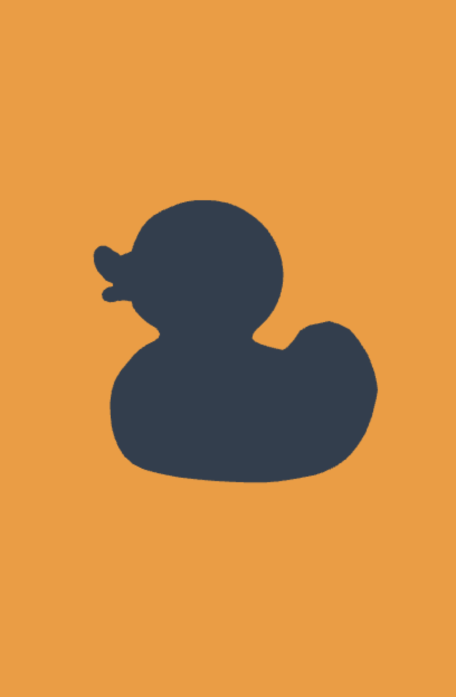
旋转鸭子
一只鸭子朝多个方向旋转，真正的聪明人可以控制它。
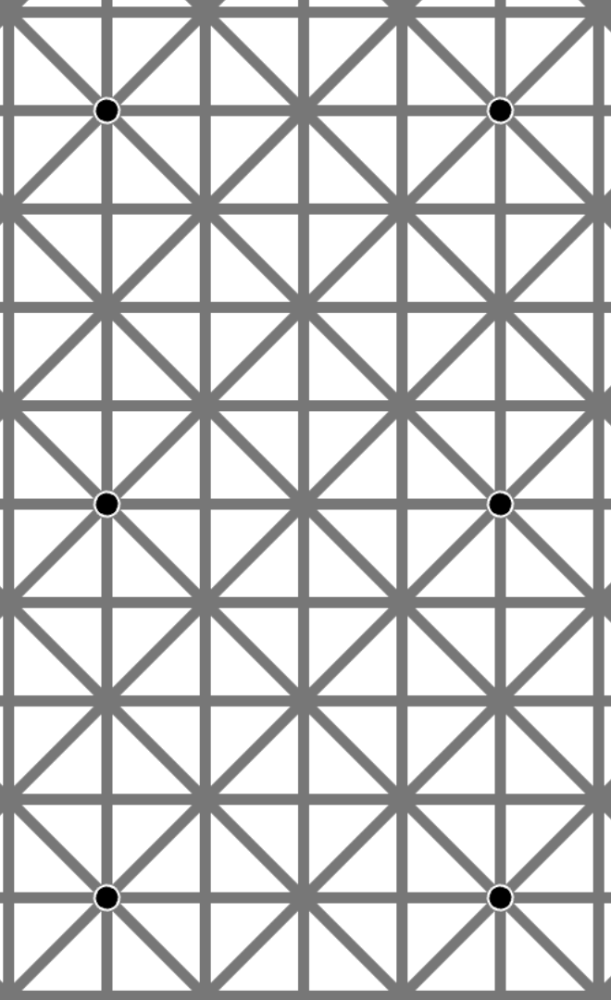
退出的点
专注于一个，其他的将会消失，你无法赢得这场比赛。
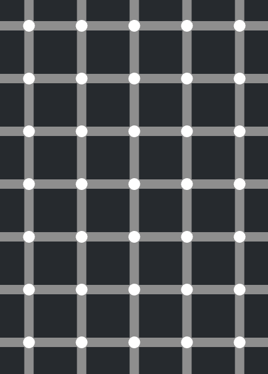
不会放弃的点
如此生动逼真，完全颠覆了视觉感官。
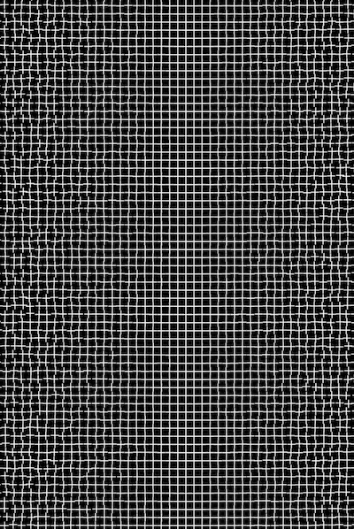
治愈网格错觉
再一次，这个重复网格会让你的眼睛和大脑产生错觉。
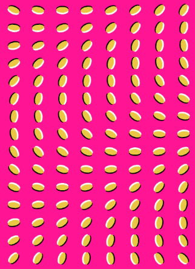
无法阻止豆子的移动
在这里，你的大脑将被这些狡猾的难题搞得灰飞烟灭。
梯度运动
将头部靠近屏幕，然后再远离屏幕，你就会看到光晕效果！
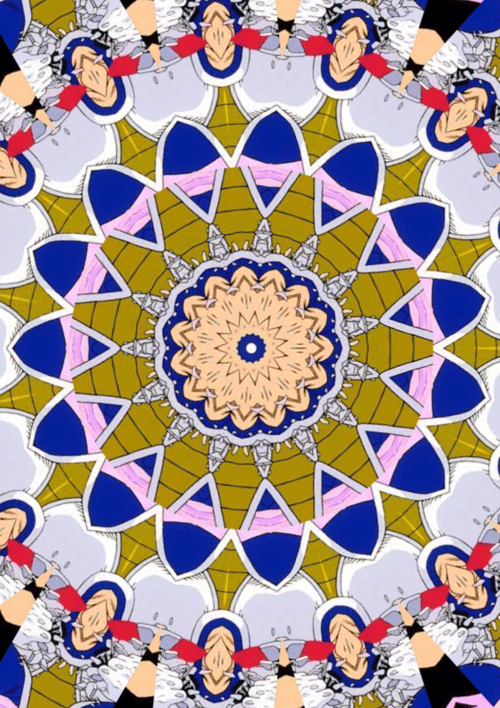
万花筒
并非真正的幻觉，但肯定是一种视觉过载。拖放！
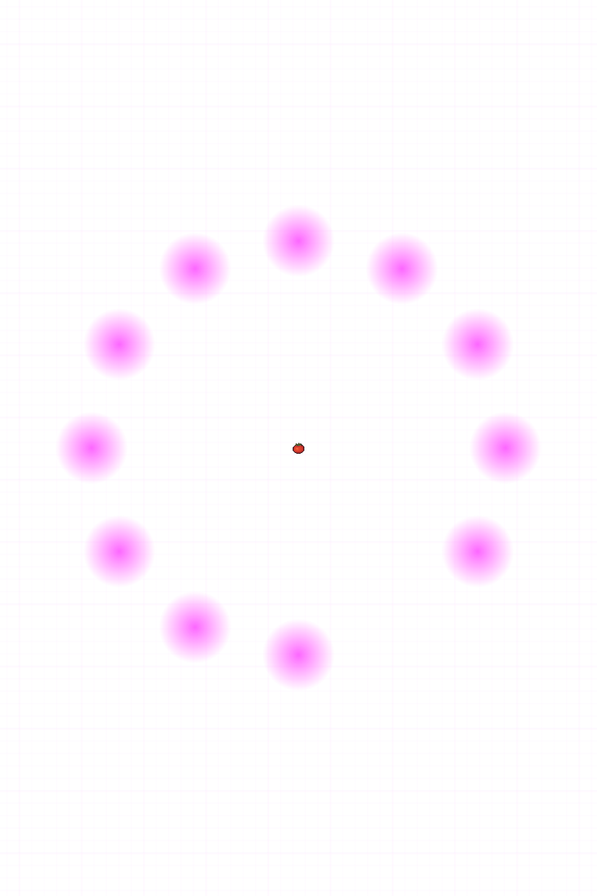
紫丁香追逐者
多种效果与这位迷幻的顾客融为一体。
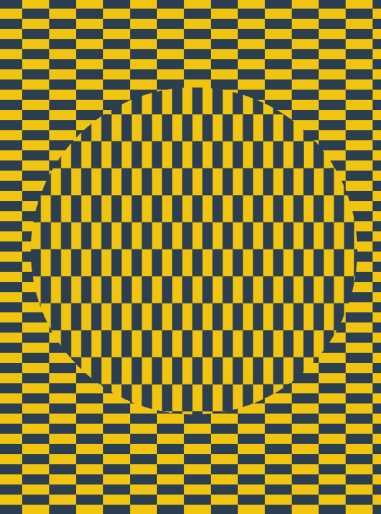
大内幻象
有如漂浮的圆盘，你能感知它，却无法阻止它。
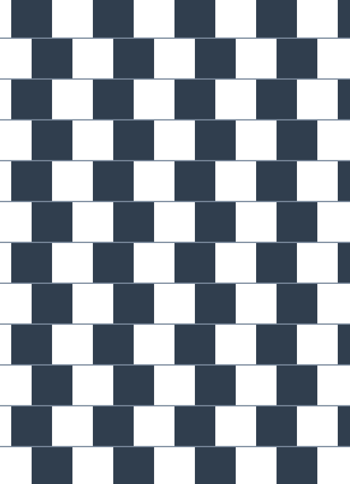
直线方块
这个谜题有点难倒人，没错，这些线都是笔直的。你需要一些笔直的东西来测试。

特克斯勒淡出
看着番茄，看着世界其他地方逐渐消失……该死。
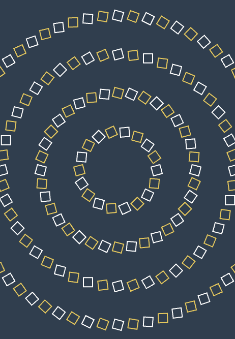
螺旋但不是
它们看起来好像是连接在一起的…但仔细看看？